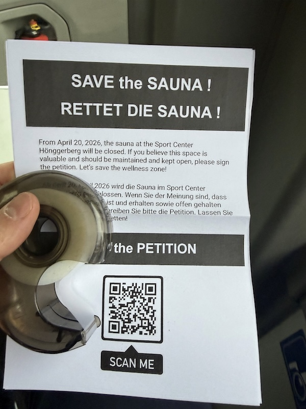

Before writing this post, I pause for a minute and think about the sauna that is no more at ETH Honggerberg. I tried my best to save it, we tried to save it, but it was not meant to be. So the beautiful sauna at ETH Honggerberg is gone, removed and replaced by fitness machines. The sauna at UZH Irchel campus and Fluntern had already disappeared years ago. The Honggerberg sauna was the last sauna of the ASVZ academic sports organisation, which means there is now no wellness infrastructure left at Zurich's universities.
All students in Switzerland are automatically members of ASVZ, funded through tuition fees. ASVZ is an amazing and one-of-a-kind institution, maintaining sports infrastructure and offering all sorts of classes for students, staff and alumni. In many ways, it feels like a rare example of public sports policy done right, almost reminds me a little bit of the Yugoslav sports organization Partizan+Sokol: accessible, collective, subsidized, for everyone. And up to last winter, one could work out, run, and then jump into the wellness world and relax for an hour or two. Yes. Perhaps it was too good to be true, but then again - why should it be? Shouldn’t environments become more supportive of human wellbeing rather than less? The ASVZ motto is: for brain, body, and soul. Body. And soul.
Now, in spring, memories of cold and rainy winter return through memories of the sauna. I try to understand why this place of culture, silence, reading (many people read books in the quiet area), and rest had to disappear, and how ETH, ASVZ, and society more broadly allowed it. When the closure was announced, the reaction was immediate disbelief: “Really? But why?” We created a petition, save-the-sauna.ch, now signed by more than 600 people. One comment said: “The sauna is one of the few places at ETH dedicated to relaxation rather than stress.” Even if there were no proven health benefits at all, that would still not be the point. A sauna is a space of wellbeing without productivity, and that alone should be enough reason to keep it. Why are such spaces disappearing?
First, the simplest possible answer: was it about money? ASVZ as a university sports organization has a yearly profit in the millions. So short answer: no. ASVZ could easily, if they wanted to, keep the sauna(s). ASVZ is in "service" (has a mandate) of universities that are represented at board meetings by board members. At one of these board meetings, the members voted in favour of the ETH Honggerberg sauna closure. The minutes of these meetings are not public and we could not get to them. So the argumentation is not clear. We did have a 1h meeting with the ASVZ directors (I think in February), and they ASVZ leadership stated: "we are closing the sauna because we need fitness space". ETH is indeed financing the expansion of the fitness area into the sauna space and agrees with ASVZ policies. ASVZ has a financial surplus of 2-3 million CHF each year.
So it is not about money. What is it then?
ASVZ claims it's about space. We need more fitness space. The sauna was on two floors. "You can use one floor to expand the fitness, and only leave the sauna on the top floor?", was our argument, with the reply, "No, we do not want to keep the sauna and we will use all the space for fitness."
It's not space. What is behind these policies then?
One of my favourite philosophers, the amazing Umberto Galimberti, often describes in his talks and books, how we are living in the era of the technical system, one could say a technocracy, where everything we do has the scope of furthering (pushing to the limit) and optimizing (not improving) the system with higher profits as ends. Technocracy — where nearly everything becomes subordinate to optimization, efficiency, and performance. Profits here can be any form of output / advantage / gain. Worldwide, universities (and schools in general) are becoming more and more services for the economic system we are living in. The schooling system in general is less and less a system of education, but of training of people to become well functioning elements in the technocratic aparatus. In this light, also the economy is changing, and we are becoming more and more (as Varoufakis would say), in the service of our new lords, the techno-feudalists.
In such systems, institutions increasingly orient themselves not around human flourishing, but around metrics, outputs, and growth. At very good universities, this fact is reflecting more and more the paper-grant-money paradigm: a lot of "science" for the sake of papers in high ranking journals, the papers for the sake of grants, the grants for the sake of employing people that will write papers that will get grants that will bring in money to employ people to do "science". What emerges is something like a techno-university: publicly funded, but operating with corporate logic. Structured like a corporation, measured like a corporation, optimized like a corporation.
Nothing is black and white of course, and apart from research areas and labs that still are able to do basic science and research, aren't many techno-departments overfitted to the paper-grant-money paradigm? Could it be, perhaps, that entire (mostly elitistic) universities are turning more and more into some kind of publicly funded entities, where the research paradigm is turned to its head: its not the question of how things work and curiosity that drives the research, but the prospect of funding guides the work.
Techno-university? If you think of it, a genial paradigm, because you (as a tax payer) are financing an entity that is sliding more and more into the profits concept away from the mandate society envisioned for such institutions. It's not simply a company fighting on the market and selling its products, it's a boosted techno-university, paid by tax-payers, doing "science", and getting more money based on the papers and grants, to do more "science". Structured like a corporation, with very limited freedom and optimized for profit. High-stress and low salary, a highly hierarchical (if not "aristocratic") structure (professors, PIs, staff, management), almost organized like the army or the health system, with a semi-slave work force (students work for free, and Phd students work almost for free). Isn't this almost a wet dream for anyone who would like to run a big corporation? And moreover, isn't a similar process (metamorphosis) hitting the health system in countries where health is still "public" and accessible to the masses, and not yet privatized completely?
In such systems, when everything becomes "purpose-driven", even rest becomes suspect. Sleep becomes optimization. Exercise becomes productivity. Life becomes a constant justification of output. And yet life is not a performance optimization problem.
The social agreement in the past could have sounded like this: we establish universities, paid by society, to educate, instruct and cultivate generations. And at the same time do research and find out things that will improve our society, our lives, ourselves. Or simply do research just for the sake of research, no profit-purpose behind it. Isn't the main goal (more or less at least?) to figure things out, educate people, give people value, empower people? So, universities for the benefit of people, the whole human race, and not for "profits"? Aren't we financing universities from the money that society collects over taxes exactly because we do NOT want universities to behave like corporations? Universities do NOT need a purpose or justification, also freedom or democracy needs no justification, also a public accessible health system needs no justifications. These entities and concepts are all valuable on their own. Same for freedom and democracy.
But let’s think about what it really means to behave like a corporation. Taken to its extreme, it means doing things only to gain something — constantly optimizing performance, efficiency, and output. Every action must serve a purpose: to sell, to compete, to generate profit on the market. Everything becomes instrumental. Pushed far enough, this philosophy turns even the most basic human acts into questions of productivity. Even going to the toilet must justify itself: we need you working, and if you absolutely need to pee in order to keep performing, then — reluctantly — permission granted.
But also corporations are not all equal. The above is an extreme, and there are departments and I am also sure entire corporations that function in an "optimal" way, because the systems themselves are aware the well-being of people is good for business.
And the other extreme? Yes, a beautiful world where everyone works for the good of society. Ha. "You may say I am a dreamer." Yes sure, but like in all matters, what is the mandate and mission of universities and the public health system is not binary, and we can discuss degrees.
What a closure of a wellness sauna area is symptomatic of, perhaps, is that also universities are becoming "corporate-like" and loosing the public mandate, the aura of academia if you like. Gone is the magic of research? The student, the scientist, the employee: seen more and more as a means to an end, and the end is profit, in whatever way you imagine it. Profit as money, profit as high ranking publications, profit as fame and glory of the PI, profit. And perhaps the degree to which this profit is pursued at the cost of curiosity, academic freedom and genuine research, is highest at the most "high-ranking", "elite" universities.
So perhaps it's a good strategy to be very careful before applying to the most famous, "best", "richest" and most prestigious universities, because mostly those are today just corporation-like entities in disguise, offering very little creativity, culture, freedom, and kindness. Plus: everything is fuzzy. Including the salary. A low salary, a profit mindset and a highly stressed slave-like workforce (students): if you add on top leadership with a palette of personality disorders (mostly narcissistic traits) which academia attracts (or at least is not able to fire), the conclusion could be: run Forrest run?
At least with big corporations, you more or less know what you are signing for. Like Žižek beautifully describes how today, one not only needs to stomach situations and do things because one needs to do them, but is also, in a perverse way, made to like the things one dislikes. Ideology today does not only force us to comply, it also demands that we enjoy it. Work harder for passion. Sacrifice for science. Accept stress as privilege. The system does not only want performance — it wants identification. Isn't it that if you work for universities, long hours, no work life balance mostly, for the "sake of science", you "have to like it" compared to corporations, where you click in at 9 and click out at 17h and at least you know that's it, and you have a life in the morning and evening?
This whole sauna-closure charade — and the vomit-inducing arguments from ASVZ and ETH — made me think deeply about purpose in life. Society, techno-feudalism, and the entire machinery built around capital, profit, and performance optimization are slowly devouring whatever remains of our humanity. Yes, in life one has to function. One has to be pragmatic, productive, performant. But performance alone cannot be the meaning of existence. Performance fluctuates; it rises and falls. Machines are built for endless optimization. Human beings are not. A human life also needs beauty, freedom, slowness, chaos, uselessness, spontaneity — things that cannot always be justified through efficiency metrics or economic output. The moment every space, every action, every minute must prove its utility, something profoundly human begins to disappear.
Things would be fantastically simple if life would be a performance optimization problem. And luckily it is NOT.
Ask, for example, about beauty, what is the purpose of beauty? Or ask yourself, do I only do what is optimal or do I also do what I want to, what I like, what I find meaningful in a complex web of interhuman and intersocial relations? You see? You can have an "optimized" life. Imagine you manage to construct a life that is fully performance optimized. Naturally it's impossible, and it would be the horror of horrors anyway. Greeks knew this from the start, eudaimonia katametron. Find something you like, pursue it, also with great passion, but know your limits and adjust effort and goals accordingly. And if you overdo it and neglect everything else but your passion? Germans have a specific word for it: Fachidiot. And voila, here you are, preparing your own demise.
Fortunately (or unfortunately, however you look at it), the human condition is very complicated (diverse) and humans are the only animals that need to construct meaning that counteracts the inevitableness and tragedy of death. There are no easy solutions, also not in mostly right-wing recipes for discipline and hard-core work ethics. In fact to live in creativity and meaningfully also calls for a certain degree of chaos, spontaneity, expression via art, playfulness and most of all in a connected and kind way. At first look, all these aspects would never be funded in a grant. Beauty has no purpose in itself (at least no practical one). Yet, we often escape the meaninglessness of life via art, science and mostly: beauty. And I am tempted to say here that beauty plays a much much larger role in this "construction of sense" compared to performance optimization.
I’m not sure if all of the above really answers the question, but to me the disappearance of the sauna feels symbolic: it is almost as if “doing nothing” — simply resting, being — has become unacceptable. The sauna, in that sense, is dangerous precisely because it legitimizes non-productivity. It also carries something else: a quiet form of beauty. And perhaps beauty itself is what becomes most threatening to the machinery of optimization, profit, and constant output. Maybe this is why even elite universities increasingly feel alien in a human sense. Not empty in activity — quite the opposite — but empty in connection. Lots of clicks, metrics, procedures, and outputs, but little relation to anything like intellectual or human essence. Increasingly, they resemble large bureaucratic corporations: heavily regulated, compliance-driven systems with an expanded HR logic, where the primary concern is not education, but management of performance. The implicit message is simple: perform, produce, publish, secure funding, keep the machine running. There is little space left for growth that is not instrumental, for curiosity that is not justified, for discovery that is not pre-assigned a purpose. Science, in its purest sense — exploration without predefined utility — becomes harder to recognize. And perhaps the most disturbing part is how this is wrapped in the language of meaning, freedom, and excellence. The contradiction is almost elegant. Institutions that present themselves as the guardians of knowledge increasingly operate in ways that drift away from it. In some cases, a large research department in a corporation can feel more “university-like” — in the sense of curiosity and exploration — than today’s so-called elite universities.
Think about it: who wouldn’t want meaningful work, serious research, sport, rest, culture, art, science — and, in general, a good life? Most people do want exactly that. And yet, through taxes and institutions, we often end up funding systems that seem structurally misaligned with it. Not necessarily because of bad intentions at the individual level, but because the machinery itself optimizes for something else. This is not limited to education or healthcare; it increasingly feels like a broader pattern across society. Elite universities, in particular, risk becoming corporate-like systems in academic disguise: publish, raise funds, climb rankings, optimize outputs. The language remains that of freedom, excellence, and progress — but the underlying incentives often point elsewhere.
The ultimate business trick: you are paying via taxes to exactly NOT get what you want.
Once I heard a PI say after I put my arguments on the table for better work conditions: "But what did you expect, this is an elite university!" and like that, in a second, I understood: this ship is sinking. Perhaps not financially, but intelectually.
Remember that not all that shines is gold, and "elite" many times just means an overfitting to some particular purpose, usually profit. The average player is often a much better (and healhier) choice. Buy a second hand Polo, not a new shiny Porsche. With a Polo you can travel far and cheap. With a Porsche you can attract money-fame-success hungry weirdos and get hurt and broke. Even better, but a bicycle, if you can buy anything at all. And be extremely careful of what you want, because eventually you are going to get it.
So I would say (mostly to myself), beware which places you spend your limited time at. Don't be a fool. Don't be a robot. Forget the "elite". Keep your soul.
The concept of the "sauna" is of a place without purpose, output and stress. It simply represents a place where you can just, well, be. Be. This is in strong contrast and conflict with living and functioning in service of an aparatus that uses you like a machine. "Only ever do anything if it has a purpose". To many people the concept of "just being" became completely foreign. Alien. They lost the ability to just be. They lost the ability to "do nothing". And they must always "perform", possibly in an optimal way, whatever that means. Because otherwise the big deep senselessness of death jumps at them. Anything is better than just being here, breathing, sitting still: this is me, here I am, I see the light, there is no purpose to it. In the end I am going to die. So what? Let's relax and enjoy in the sauna.
And that's, for the most part, why the sauna is gone.

Save the sauna fliers